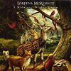

Celtic Lyrics Corner > Artists & Groups > Loreena McKennitt > A Midwinter Night's Dream > The Seven Rejoices Of Mary
|  | The Seven Rejoices Of Mary |
| Credits : | Traditional; arranged by Loreena McKennitt |
| Appears On : | A Midwinter Night's Dream |
| Language : | English |
| Other Versions : | " Seacht Suáilcí Na Maighdine Muire " on Aoife Ferry's album Aoife |
Lyrics :
The first good joy that Mary had
It was the joy of one
The first rejoice that Mary had
Was to see her newborn son
To see her newborn son, good man
And blessed may he be
Sing Father, Son and Holy Ghost
To all eternity
The next good joy that Mary had
It was the joy of two
To see her son Jesus
Make the lame to go
The next rejoice that Mary had
It was the joy of three
To see her own son Jesus
To make the blind to see
To make the blind to see, good man
And blessed may he be
Sing Father, Son and Holy Ghost
To all eternity
The next good joy our lady had
It was the joy of four
It was the rejoice of her dear son
When he read the Bible o'er
The next good joy that Mary had
It was the joy of five
To see her own son Jesus
To make the dead alive
To make the dead alive, good man
And blessed may he be
Sing Father, Son and Holy Ghost
To all eternity
The next rejoice our lady had
It was the rejoice of six
To see her own son Jesus
To bear the crucifix
The next good joy that Mary had
It was the joy of seven
To see her own son Jesus
To wear the crown of heaven
To wear the crown of heaven, good men
And blessed may he be
Sing Father, Son and Holy Ghost
To all eternity
And glory may he be
And blessed now be she
And those who sing the seven long verses
In honor of our lady